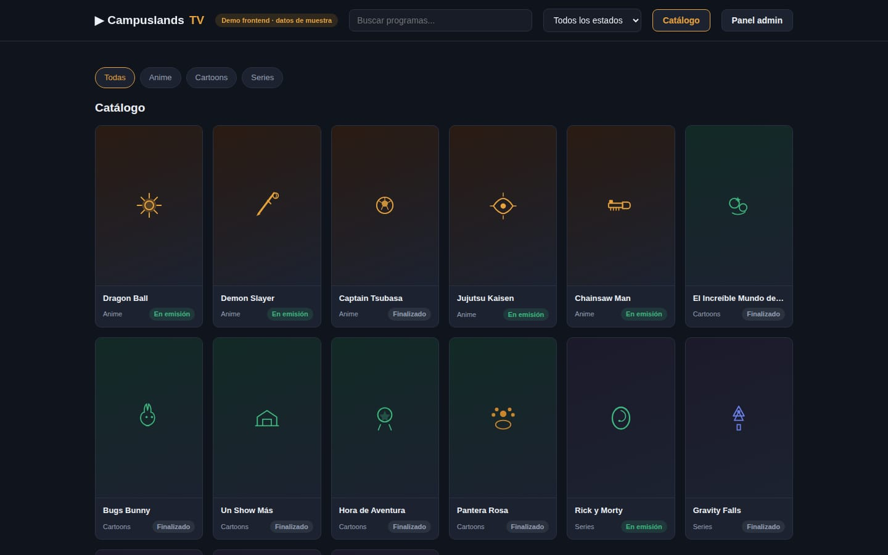
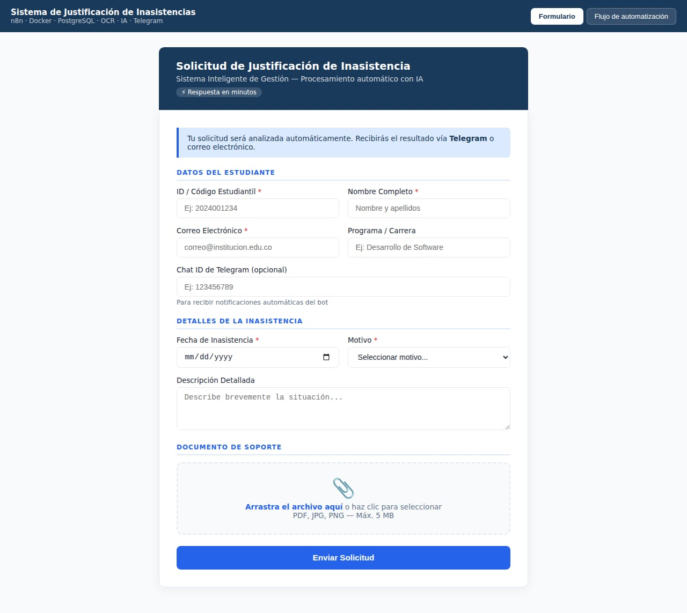
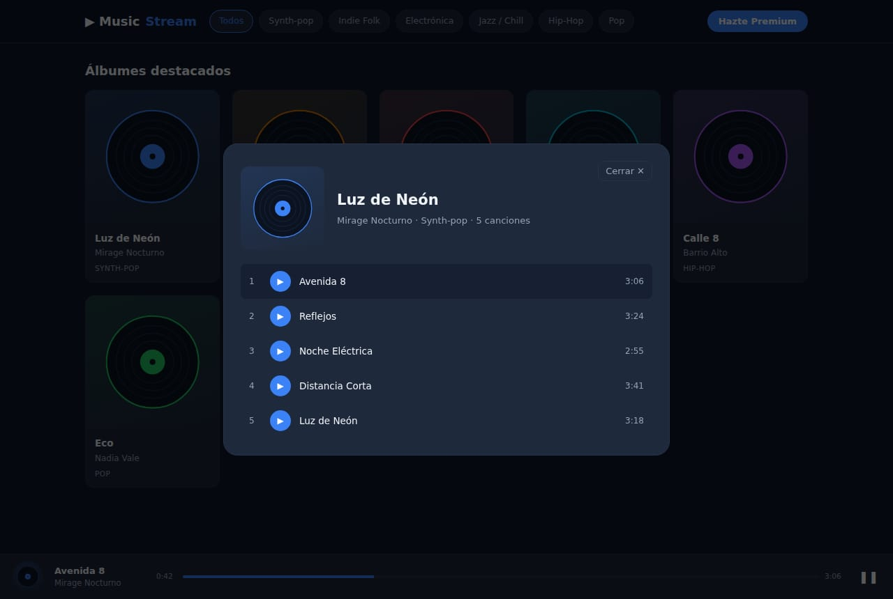

Desarrollo de software · Backend y APIs
Técnico en Desarrollo de Software
Desarrollo soluciones de software claras y funcionales, enfocadas en resolver necesidades reales.
Soy Curioso
Mi formación abarca backend, frontend, APIs, bases de datos e inteligencia artificial. También aprendí automatización con n8n y sistemas embebidos.
Mi formación abarca desarrollo backend y frontend, APIs, bases de datos e inteligencia artificial. También aprendí automatización con n8n y sistemas embebidos.
Analizo cada problema antes de programar y busco soluciones claras, funcionales y fáciles de mantener.
Me interesa integrarme a un equipo de desarrollo y contribuir en proyectos reales con colaboración y atención al detalle.
Demos de interfaz y enlaces a los repositorios para explorar el alcance de cada proyecto.



Formación en Desarrollo de Software
2025–2026Formación técnica con enfoque práctico en desarrollo de software.
Ingeniería en Sistemas
2026–actualidadPrimer semestre con contenidos de programación, tecnología, matemáticas y administración.
Bachillerato en Ciencias y Letras con Orientación en Computación
2025En la competencia nacional de robótica Balam, en Guatemala, participé con mi robot RoboFut, que armé y programé desde cero, y quedé entre los 10 primeros lugares.
Comprender el problema y los requisitos.
Definir la estructura y la solución.
Construir la funcionalidad.
Probar y corregir errores.
Organizar y documentar el proyecto.
Preparar el proyecto para su uso o despliegue.
Abierto a oportunidades junior y colaboraciones en desarrollo de software. Si tu equipo necesita apoyo en backend, APIs o bases de datos, conversemos.